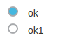
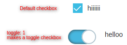
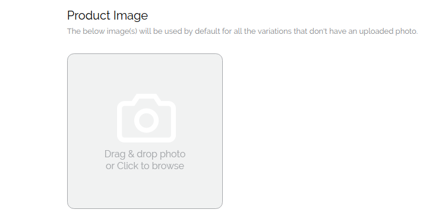
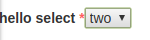
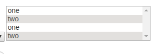
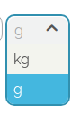
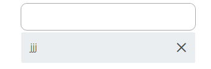
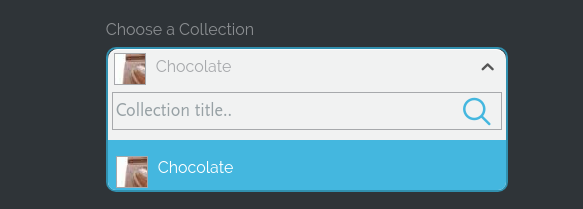
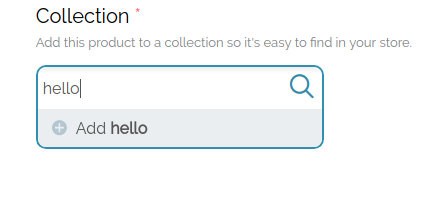
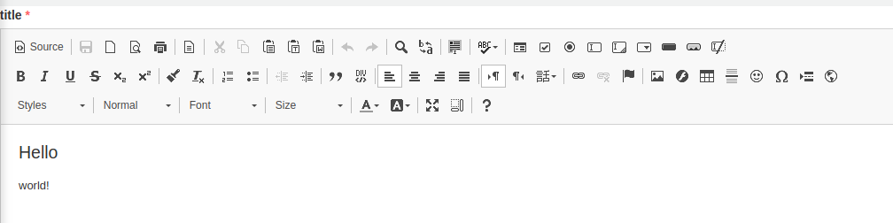

Note that:
- The titles prefixed by BO means that the type was made specifically for the Back office pages
- Otherwise the function is made to be used for both.
For Dom Generation you have the following function.
window.SBsdk.SBfunctions.SBmessages.generateDom(type, options);
The parameters:
-type is a String
-options is an obj
BO - TITLES
Preview: (SECTION TITLE)
~~~~~~~~~~~~~~~~~~~~
Parameters: (SECTION TITLE):
~~~~~~~~~~~~~~~~~~~~
type = 'section_title';
options = {
Title: 'Title',
};
Preview: (SECTION SUBTITLE) :
~~~~~~~~~~~~~~~~~~~~~~~~~
Parameters: (SECTION SUBTITLE)
~~~~~~~~~~~~~~~~~~~~~~~
type = 'section_subtitle';
options = {
Title: 'Title',
};
BO - STICKY ACTION BUTTONS
Preview:
~~~~~~
Parameters:
~~~~~~~~~~~~
type = 'sticky_action_buttons';
options = [
{type: '', class: '', id: '', Title: ''},
...
];
where:
- type can be btn, del-btn or cancel
- notes:
-- type cancel is a link by default it will have CANCEL title.
-- type del-btn by default will have Delete title. It doesnt have an id option, the first delete button added will have a delete widget to confirm deletion.
Example:
window.SBsdk.SBfunctions.generateDom('sticky_action_buttons', [
{type: 'btn', class: 'class-1', id: 'id-1', Title: 'save-1'},
{type: 'btn', class: 'class-2', id: 'id-2', Title: 'save-2'},
{type: 'del-btn', class: 'class-del-1'}, // titles for del btns are optional ||| no ids for del
{type: 'del-btn', class: 'class-del-1'}, // titles for del btns are optional ||| no ids for del
{type: 'cancel', class: 'class-link-1' , id: 'idddd', Title: 'ssss'} // titles for cancels are optional
]);
BO - RADIO
Preview:
~~~~~~

Parameters:
~~~~~~~~~~~~
type = 'radio';
options = {
wrapperClass: 'wrapperClass', //(REQUIRED)
name: 'common-for-all-radios', //(REQUIRED)
disabled: 1,
data: [
{"Title":'', "class":'', "id": '', "value": '', "checked" : 1},
{"Title", "class", "id", "value"}
]
};
Helper Functions:
~~~~~~~~~~~~
- Radios actions: (ie. radio that is generated using generateDom):
SBsdk.SBfunctions.radio_action(inputSelector_wrapperSelector, action);
where:
- action can be reset, disable, enable or check
- for the actions reset, disable, enable the inputSelector_wrapperSelector should be the wrapperClass of the radios
- for the action check the inputSelector_wrapperSelector should be the radio input
note that when radios are disabled you can not check radios
Example:
SBsdk.SBfunctions.radio_action('.shopbuilder-radio', 'reset');
SBsdk.SBfunctions.radio_action('.shopbuilder-radio', 'disable');
SBsdk.SBfunctions.radio_action('.shopbuilder-radio', 'enable');
SBsdk.SBfunctions.radio_action('.shopbuilder-radio input:last', 'check');
BO - CHECKBOX
Preview:
~~~~~~

Parameters:
~~~~~~~~~~~~
type = 'checkbox';
options = {
wrapperClass: 'wrapperClass',
toggle: 1, // to transform it into a switch checkbox
data: [
{"Title":'', "class":'', "id":'', "name":'', "value":'', "checked":1, "disabled":1},
{"Title":'', "class":'', "id":'', "name":'', "value":'', "checked":1, "disabled":1}
]
};
Helper Functions:
~~~~~~~~~~~~
- Checkbox actions: (ie. checkbox that is generated using generateDom):
SBsdk.SBfunctions.checkbox_action(inputSelector, action);
Where:
- inputSelector: ex "input.input-selector" OR "input#input-selector"
- action: enable, disable, check, uncheck
Example:
SBsdk.SBfunctions.checkbox_action('.input-selector', 'uncheck');
SBsdk.SBfunctions.checkbox_action('.input-selector', 'check');
SBsdk.SBfunctions.checkbox_action('.input-selector', 'disable');
SBsdk.SBfunctions.checkbox_action('.input-selector', 'enable');
BO - IMAGE WIDGET
Preview:
~~~~~~~

Parameters:
~~~~~~~~~~~~
type = 'image_upload';
options = {
Title: 'Title',
TitleClass: 'TitleClass',
wrapperId: 'wrapperId',
multiple : 1,
inputFileData:{ max, id, name, size, class }, // the input of type file data
deleteFileData:{name, id, class}, // the delete btn data
uploadFileData:{ name, id, class}, // the upload btn data
values : [{..},{..}]
// check example to see how to populate this;
//note that it can be an array of objs (multple image upload) or an array (single image)
};
TEXTFIELD
Parameters:
~~~~~~~~~~~~
type = 'textfield';
options = {
wrapperClass: 'wrapper-class',
type: 'password' or 'date' or 'search'("search" is BO specifc - to take the design of a search field), // if type is text dont put type option
class: 'class',
name: 'name',
value: 'value',
Title: 'title',
required: '1', // (don't use if not required)
placeholder: '',
id: '',
size: '',
maxleng: ''
};
Helper Functions:
~~~~~~~~~~~~
- The textfield type is date:
The following function will help you get or set the value in the date picker
function SBsdk.SBfunctions.date_actions(selector, action, value)
Selector ex
Selector = '#inputSelector'||Selector = '#inputSelector'
action can be 'set' || 'get'
value use in case ofaction = 'set'ex.value= '12/13/2018'
Example:
jQuery('body').append(window.SBsdk.SBfunctions.generateDom('textfield', {
wrapperClass: 'wrapper-date',
Title: 'Title',
type: 'date',
id: 'datee',
name: 'date',
maxlength: 255,
})
);
SBsdk.SBfunctions.refresh();
SBsdk.SBfunctions.date_actions('#datee', 'set', '5/30/1994');
console.log(SBsdk.SBfunctions.date_actions('#datee', 'get'));
SELECT
Preview:
~~~~~~
-single select:

-multiple select:

Parameters:
~~~~~~~~~~~~
type = 'select';
options = {
wrapperClass: 'wrapper-class',
class: 'class',
name: 'name', // required for a multi select
Title: 'title',
required: '1', // (don't use if not required)
id: '',
multiple: 1, // multiple select (don't use if not multiple)
options: [{value: '', selected: 1, label: '', class:''}, ..],
};
SPECIAL SELECT
Preview:
~~~~~~~
-single select:

-multi select:

Parameters:
~~~~~~~~~~~~
type = 'select';
options = {
wrapperClass: 'wrapper-class',
class: 'class',
name: 'name', // required for a multi select
Title: 'title',
required: '1', // (don't use if not required)
id: '',
multiple: 1, // multiple select (don't use if not multiple)
options: [{value: '', selected: 1, label: '', class:''}, ..],
select2: {
dropdownCssClass: 'dropdownClass', // adds a class for the select dropdown
addAsterisk: defaultValueOfSelectField, // adds a '*' for the default value text
searchable: { // adds a search for the select
placeholder: 'hello' // the place holder text of the search
}
}
};
Helper Functions:
~~~~~~~~~~~~
1- Get and set the special select:
You can simply get and set any special select using jQuery as any normal select tag:
Example:
// GET
// where the .class is the class applied on the special-select SELECT tag.
jQuery('.class').val();
// SET
jQuery('.class').val('option1');
// to apply the set change simple trigger change
jQuery('.class').trigger('change');
2- Append and Remove new elements to any special select:
SBsdk.SBfunctions.select2_action(select_selector, action, array_of_options)
action parameter can be append or reset
where:
- append appends on existing options
- reset removes old options and adds new options
Example:
// normal options
options = [
{class:'aa', value: 'abcd' , label: 'ra', imageSelect2: 'img-src.png',customHtml: ''},
{class:'bb', value: 'abcdabcd', selected: 1, label: 'ma', imageSelect2: 'img-src.png',customHtml: 'editme'},
{class:'cc', value: 'abcdabcdabcd', selected: 1, label: 'fa', imageSelect2: 'img-src.png',customHtml: 'editme'},
];
// parm(0) is the select_selector ("class") ex. ".selector_select"
// parm(1) is the action which is append..
// parm(2) is the new options wanted to be appended..
SBsdk.SBfunctions.select2_action('.selector_select', 'append', options);
SPECIAL SELECT IMAGE WIDGET
Preview:
~~~~~~~

Parameters:
~~~~~~~~~~~~
type = 'select';
options = {
wrapperClass: 'wrapper-class',
class: 'class',
name: 'name', // required for a multi select
Title: 'title',
required: '1', // (don't use if not required)
id: '',
multiple: 1, // multiple select (don't use if not multiple)
options: [
{
value: '',
selected: 1,
label: '',
class:'',
imageSelect2: 'url', // the image url
customHtml: "html" // some html that is added beside the option Label
},
..
],
select2: {
dropdownCssClass: 'dropdownClass', // adds a class for the select dropdown
addAsterisk: defaultValueOfSelectField, // adds a '*' for the default value text
searchable: { // adds a search for the select
placeholder: 'hello' // the place holder text of the search
},
image: 1
}
};
Helper Functions:
~~~~~~~~~~~~
Same helper functions of special select
SPECIAL SELECT WIDGET
Preview:
~~~~~~~

Parameters:
~~~~~~~~~~~~
type = 'select';
options = {
wrapperClass: 'wrapper-class',
class: 'class',
name: 'name', // required for a multi select
Title: 'title',
required: '1', // (don't use if not required)
id: '',
multiple: 1, // multiple select (don't use if not multiple)
options: [
{
value: '',
selected: 1,
label: '',
class:'',
imageSelect2: 'url', // the image url
customHtml: "html" // some html that is added beside the option Label
},
..
],
select2: {
dropdownCssClass: 'dropdownClass', // adds a class for the select dropdown
image: 1
},
widget: { emptyText: 'no more results found', addButtonClass:'class-to-the-add-btn'}
};
Helper Functions:
~~~~~~~~~~~~
Same helper functions of special select
UPLOAD
Parameters:
~~~~~~~~~~~~
type = 'upload';
options = {
wrapperClass: 'wrapper-class',
class: 'class',
name: 'name',
value: '',
Title: 'title',
required: '1', // (don't use if not required)
id: '',
size: ''
};
TEXTAREA
Parameters:
~~~~~~~~~~~~
type = 'textarea';
options = {
wrapperClass: 'wrapper-class',
class: 'class',
name: 'name',
value: '',
Title: 'title',
required: '1', // (don't use if not required)
id: '',
rows:'',
cols:'',
placeholder:'',
maxlength:''
};
WYSIWYG TEXT EDITOR
Preview:
~~~~~~

Parameters:
~~~~~~~~~~~~
type = 'wysiwyg';
options = {
wrapperClass: 'wrapper-class-of-wysiwyg',
class: 'class', //(REQUIRED)
Title: 'title',
required: '1', // (don't use if not required)
value: '', //(string contains markup --can be html)
};
Helper Functions:
~~~~~~~~~~~~
1- Get or Set the wysiwyg data:
var get_data = SBsdk.SBfunctions.wysiwyg_data(class_of_wysiwyg); // gets the data
SBsdk.SBfunctions.wysiwyg_data(class_of_wysiwyg, 'set', HTML_data); // set data
Example
SBsdk.SBfunctions.wysiwyg_data('.pop-up', 'set', '<p>hello</p>'); // sets the html inside the wysiwyg
var get_data = SBsdk.SBfunctions.wysiwyg_data('.pop-up'); // returns the html inside the wysiwyg that is <p>hello</p>
2- Configure your wysiwyg:
by default you will have the cofiguration used in Shopbuilder platform that is
config = {};
config.toolbar = ["Bold", "Italic", "Underline", "JustifyLeft", "JustifyCenter", "JustifyRight", "JustifyBlock", "BidiLtr", "BidiRtl", "BulletedList", "NumberedList", "Outdent", "Indent", "Undo", "Redo", "Link", "Unlink", "Anchor", "Image", "Cut", "Copy", "Paste", "PasteText", "PasteFromWord", "RemoveFormat", "Format", "FontSize", "video_filter"];
To change the configuration of all of your wysiwyg use the function:
window.SBsdk.SBfunctions.wysiwyg_configuration(config);
Note that the config parameter can be given the same values as a ckeditor config
A) To get all of the supported items in a wysiwyg
config = {};
window.SBsdk.SBfunctions.wysiwyg_configuration(config);
SET
config = {};
That is equivalent to:
config= {};
// Toolbar configuration generated automatically by the editor based on config.toolbarGroups.
config.toolbar = [
{ name: 'document', groups: [ 'mode', 'document', 'doctools' ], items: [ 'Source', '-', 'Save', 'NewPage', 'Preview', 'Print', '-', 'Templates' ] },
{ name: 'clipboard', groups: [ 'clipboard', 'undo' ], items: [ 'Cut', 'Copy', 'Paste', 'PasteText', 'PasteFromWord', '-', 'Undo', 'Redo' ] },
{ name: 'editing', groups: [ 'find', 'selection', 'spellchecker' ], items: [ 'Find', 'Replace', '-', 'SelectAll', '-', 'Scayt' ] },
{ name: 'forms', items: [ 'Form', 'Checkbox', 'Radio', 'TextField', 'Textarea', 'Select', 'Button', 'ImageButton', 'HiddenField' ] },
'/',
{ name: 'basicstyles', groups: [ 'basicstyles', 'cleanup' ], items: [ 'Bold', 'Italic', 'Underline', 'Strike', 'Subscript', 'Superscript', '-', 'CopyFormatting', 'RemoveFormat' ] },
{ name: 'paragraph', groups: [ 'list', 'indent', 'blocks', 'align', 'bidi' ], items: [ 'NumberedList', 'BulletedList', '-', 'Outdent', 'Indent', '-', 'Blockquote', 'CreateDiv', '-', 'JustifyLeft', 'JustifyCenter', 'JustifyRight', 'JustifyBlock', '-', 'BidiLtr', 'BidiRtl', 'Language' ] },
{ name: 'links', items: [ 'Link', 'Unlink', 'Anchor' ] },
{ name: 'insert', items: [ 'Image', 'Flash', 'Table', 'HorizontalRule', 'Smiley', 'SpecialChar', 'PageBreak', 'Iframe' ] },
'/',
{ name: 'styles', items: [ 'Styles', 'Format', 'Font', 'FontSize' ] },
{ name: 'colors', items: [ 'TextColor', 'BGColor' ] },
{ name: 'tools', items: [ 'Maximize', 'ShowBlocks' ] },
{ name: 'others', items: [ '-' ] },
{ name: 'about', items: [ 'About' ] }
];
// Toolbar groups configuration.
config.toolbarGroups = [
{ name: 'document', groups: [ 'mode', 'document', 'doctools' ] },
{ name: 'clipboard', groups: [ 'clipboard', 'undo' ] },
{ name: 'editing', groups: [ 'find', 'selection', 'spellchecker' ] },
{ name: 'forms' },
'/',
{ name: 'basicstyles', groups: [ 'basicstyles', 'cleanup' ] },
{ name: 'paragraph', groups: [ 'list', 'indent', 'blocks', 'align', 'bidi' ] },
{ name: 'links' },
{ name: 'insert' },
'/',
{ name: 'styles' },
{ name: 'colors' },
{ name: 'tools' },
{ name: 'others' },
{ name: 'about' }
];
B) you can customize your configuration to get the desired wysiwyg
Example:
// It be the first function to execute before any wysiwyg injection
config= {};`
config.toolbar = [ 'Cut', 'Copy', 'Paste', 'PasteText', 'PasteFromWord', '-', 'Undo', 'Redo' ];
window.SBsdk.SBfunctions.wysiwyg_configuration(config);
// then insert your wysiwyg
dom = window.SBsdk.SBfunctions.generateDom('wysiwyg', {"wrapperClass": 'hello', "class": 'class-editor' , "Title": 'title',"required":1, "value": '<h2>Hello</h2><p>world!</p>'});
// to get the value of the inputed
data = SBsdk.SBfunctions.wysiwyg_data('.class-editor');
LINK
Parameters:
~~~~~~~~~~~~
type = 'link';
options = {
wrapperClass: 'wrapper-class',
class: 'class', //(REQUIRED)
Title: 'title',
download : 1,
href: '',
id: '',
target: '',
wrapper: 1, // if you want a link with no wrapper .. remove the wrapper option
type:'' // can be "btn", "delete" or "add" (this option is for the BO)
};
FIELDSET
Parameters:
~~~~~~~~~~~~
type = 'fieldset';
options = {
wrapperClass: 'wrapper-class',
mainTitle: 'mainTitle',
subTitle: 'subTitle',
content: dom,
};
BUTTON
Parameters:
~~~~~~~~~~~~
type = 'button';
options = {
Title: 'Title',
class: 'class',
id: 'id',
};
Examples
//Ex Radio
window.SBsdk.SBfunctions.generateDom('radio', {
"wrapperClass": 'hellooooo', // wrapper class
"name" : "name_radios[name_radios]" , // (required) name that is provided for all the radio inputs
data: [
{"Title":'ok', "class": 'ddd', "id": 'dddff', "value": 1, "checked": 1},
{"Title": 'ok1', "class": 'aaa', "id": 'ssd', "value": 0}
]
});
//Ex. checkboxes:
window.SBsdk.SBfunctions.generateDom('checkbox', {
"wrapperClass": 'hellooooo',
"toggle": 1, // optional in case you wanted a toggle like checkbox
data: [
{"Title":'ok', "class": 'ddd', "id": 'dddff', "value": 1, "checked": 1},
{"Title": 'ok1', "class": 'aaa', "id": 'ssd', "value": 0, "disabled": 1}
]
});
//Ex. text field
window.SBsdk.SBfunctions.generateDom('textfield', {
wrapperClass: 'sb-manage-input',
Title: 'Title',
required: 1,
placeholder: 'placeholder',
id: 'i-am-an-id',
name: 'hello',
size: 60,
maxlength: 255,
value: 'default value'
});
// this will generate
// <input class="text-full form-control form-text required " placeholder="placeholder" type="text" id="i-am-an-id" name="hello" value="default value" size="60" maxlength="255">
//Ex. Fieldsets
window.SBsdk.SBfunctions.generateDom('fieldset', {
wrapperClass: 'fieldset-custom-wrapper',
mainTitle: 'Hello fieldset',
subTitle: '<img ..><img ..>',
content: 'fieldset content fieldset content fieldset content '
});
//Ex. normal select
window.SBsdk.SBfunctions.generateDom('select', {
required:1,
Title : 'hello select',
wrapperClass: 'select-dummy-wrapper-class',
class: 'select-dummy-class',
id: 'id-select',
options: [
{'value': 'one', 'label' : 'one'},
{'value': 'two', 'selected' : 'selected' , 'label' : 'two'}
]
});
// this will generate
// <div class="form-item form-type-select form-group select-dummy-wrapper-class "><label class="control-label" for="id-select">hello select <span class="form-required" title="This field is required.">*</span> </label><select class=" select-dummy-class " id=" id-select "><option "="" value="one">one</option><option "="" value="two" selected="selected">two</option></select></div>
//Ex. for a select2 library -- select2
// before to $('select').select2(options) where options = {'dropdownCssClass':'sb-intro-theme-drop'}
// After:
window.SBsdk.SBfunctions.generateDom('select', {
select2: {'dropdownCssClass':'sb-intro-theme-drop'} ,
options: [
{'value': 'one', 'label' : 'one'},
{'value': 'two', 'selected' : 'selected' , 'label' : 'two'}
]
});
//if you want a normal select field dont add {{select2}} option
// if you want the select2 but you dont have options for it: select2: {}
//Ex. Multiple select2
window.SBsdk.SBfunctions.generateDom('select', {
select2: {} , // Dont include if you want a normal multiple select
multiple: 1,
name : 'multi[]',
options: [
{'value': 'one', 'label' : 'one'},
{'value': 'two', 'selected' : 'selected' , 'label' : 'two'}
]
});
//Ex. Multiple select2 widget:
window.SBsdk.SBfunctions.generateDom('select', {
select2: {} , // Dont include if you want a normal multiple select
multiple: 1,
name : 'multi[]',
widget: {
emptyText: 'Type To Add A new X',
addButtonClass: 'add-x-functionality'
},
options: [
{'value': 'one', 'label' : 'one'},
{'value': 'two', 'selected' : 'selected' , 'label' : 'two'}
]
});
//Ex. Multiple select2 widget:
window.SBsdk.SBfunctions.generateDom('select', {
select2: {
image:1,
dropDownCss: 'drop-down-class',
} , // Dont include if you want a normal multiple select
multiple: 1,
name : 'multi[]',
widget: {
emptyText: 'Type To Add A new X',
addButtonClass: 'add-x-functionality'
},
options: [
{
'value': 'one',
'label' : 'one',
class: 'class1',
imageSelect2: 'https://../img-url.png',
customHtml : '<div>Good bye</div>'
},
{'value': 'two',
'selected' : 'selected' ,
class: 'class2',
'label' : 'two',
imageSelect2: 'https://../img-url.png',
customHtml : '<div>Good Morning</div>'
}
]
});
//Ex. Image upload:
window.SBsdk.SBfunctions.generateDom('image_upload', {
Title: Image Upload Section Title , // Title of the upload
TitleClass: 'image-upload-section-title-class' , // class of the title
multiple: 1, // if we want to upload multiple images (dont use if you want a single image uploader)
wrapperId : 'wrapper-Id-of-the-image-uploader',
inputFileData: { // info needed for the input type file (that uploads the image)
name: 'a',
id: 'hello',
max: '1234556',
size: '1234',
},
uploadFileData: { // upload button that is clicked automatically after the upload
name: 'a1',
id: 'hello1',
},
// *values* is used if there are already existing images added
// if multiple image upload then:
values: [
{viewImgData:{ width, height, src, alt }, deleteFileData:{ id, name}, muliple:1 },
{ viewImgData:{ width, height, src, alt }, deleteFileData:{ id, name}, muliple:1},
{ viewImgData:{ width, height, src, alt }, deleteFileData:{ id, name}, muliple:1 },
]
// if single image upload
values: { viewImgData:{ width, height, src, alt }, deleteFileData:{ id, name} }
//(Where viewImgData is all the information for the image)
//(and deleteFileData is all the information for the delete button of the image)
// and *multiple* is required for muliple image upload
});
wysiwyg example:
window.SBsdk.SBfunctions.generateDom('wysiwyg', {"wrapperClass": 'hello', "class": 'class-editor' , "Title": 'title',"required":1, "value": '<h2>Hello</h2><p>world!</p>'});